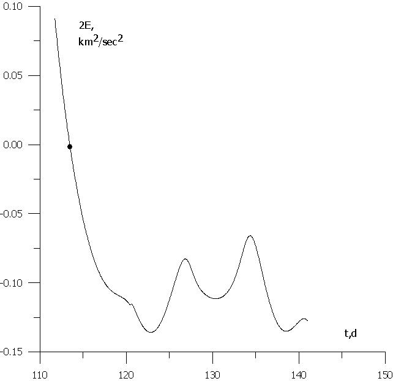
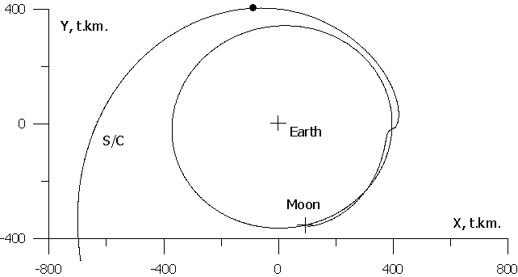

ОБ ОПТИМАЛЬНЫХ ТРАЕКТОРИЯХ ПОЛЕТА КА К ЛУНЕ В СИСТЕМЕ ЗЕМЛЯ-ЛУНА-СОЛНЦЕ
|

|
Полет Хар-ки |
Прямой |
Биэллиптический в поле
Земля-Луна |
Обходной в поле
Земля-Луна-Солнце |
|
Поле |
Земля-Луна |
Земля-Луна |
Земля-Луна-Солнце |
|
Расстояние до Земли |
До ~ 400 тыс.км. |
Превышает радиус орбиты
Луны |
~ 1.5 млн. км |
|
Время полета, cуток |
< 6 |
90; 350;
¥ для ra =(1.5; 4; ¥) млн.км |
100-130 |
|
Селеноцентрическая орбита
подлета к Луне |
Гиперболи- ческая, V¥ ~ 0.8 -1.1 км/c |
Гиперболическая, V¥ ~ 0.25;0.34; 0.4 км/c |
Эллиптическая, Ra~80 т.км. |
|
Захват Луной |
нет |
Нет |
Есть временный захват |
|
Число импульсов скорости |
2 |
3 |
2 |
|
Промежуточный импульс DV2,км/c |
0 |
0.27; 0.11;
0 |
0 |
|
Конечный им-пульс DVf, км/с |
0.81-0.93 |
0.69; 0.70;
0.71 |
0.65 |
|
Суммарный импульс
скорости DV2 + DVf, км/с, Hf = 100км |
0.81-0.93 |
0.96; 0.81;
0.71 |
0.65 |
1,1 км/с. Не считая
импульсов коррекции, на траектории сообщается два импульса (в импульсном
приближении): при разгоне с орбиты ожидания у Земли и при переходе на орбиту
спутника или посадке. Первый импульс меняется мало, DV1 = 3,126 – 3,224
км/с, при увеличении начальной энергии от минимальной до нулевой
параболической. Во второй снизу и в последней строках для данной схемы
приведена величина тормозного импульса DVf для перехода на
круговую орбиту спутника высотой 100 км, DVf » 0,81 – 0,93 км/с
для V¥ = 0,8 – 1,1 км/с.
Оптимальным без учета коррекций будет плоский касательный перелет в апогей
Лунной орбиты. По аналогии с обычным касательным двухимпульсным переходом в
центральном поле такой перелет к Луне сейчас иногда называется также
Гомановским перелетом.
Отметим
теперь, что если бы был осуществлен захват КА Луной и подлет к Луне проиcходил по эллипсу с
апоселением, например, ra = 80 тыс. км, то скорость в
периселении и импульс торможения уменьшатся, DVf » 0,65 км/с (или
~2,4км/с для посадки), что меньше на ~ 0,2 км/с импульса торможения для
обычного «прямого» перелета. Это может дать заметную экономию топлива и
увеличение полезной массы. Например, пусть начальная масса перед посадкой m0 = 1000 кг, скорость
истечения c = 2,9 км/с, масса конструкции m1 ~ 308 кг. Тогда при
DV2 = 2,6 км/с масса
топлива m2 ~ 592 кг, полезная масса mf = 100 кг. При
уменьшении импульса до DV2 = 2,4 км/с масса
топлива ~ 563 кг, и, при прежней конструкции, полезная масса mf » 129 кг, т.е. больше
на ~ 30%.
Поэтому
важно для практики и интересно с теоретической точки зрения найти и исследовать
траектории полета к Луне с захватом точки на эллиптическую орбиту.
Предварительно выполним, аналогично [10 - 12], анализ еще одной схемы полета к
Луне в рамках системы Земля –Луна.
3. БИЭЛЛИПТИЧЕСКИЕ ТРАЕКТОРИИ ПОЛЕТА К ЛУНЕ В СИСТЕМЕ ЗЕМЛЯ – ЛУНА
3.1. Межорбитальные переходы в центральном поле
Для прояснения ситуации сначала рассмотрим основные типы плоских переходов между круговыми орбитами в центральном ньютоновском гравитационном поле.
Задача оптимизации перехода между орбитами встала перед учеными на заре космонавтики в связи с анализом проблемы перелета c Земли на Марс и Венеру. Практически одновременно, в 20-х годах XX века, немецкий ученый В. Гоман [13] и советский ученый Ф.А. Цандер [14] показали, что в классе двухимпульсных плоских переходов между круговыми орбитами оптимальным по сумме величин импульсов является перелет по касательному эллипсу, см. рис. 3. Работы Ф.А. Цандера стали известны широкой научной общественности значительно позже, поэтому данный переход обычно называют Гомановским. В случае перелета между эллиптическими орбитами T0, Tf со свободной ориентацией линий апсид переходная орбита T соединяет перицентр внутренней орбиты, имеющей менее удаленный апоцентр, и апоцентр внешней орбиты. Если ra0 < raf, то rp = rp0, ra = raf.
А.А. Штернфельд затем открыл, что при большом отношении радиусов исходных круговых орбит T0, Tf указанный «классический» перелет по касательному эллипсу может уступать в энергетике т.н. биэллиптическому перелету, см. рис. 4. В этом случае используются две эллиптические орбиты: сначала КА отлетает с начальной орбиты T0 по первой переходной ор-бите T1 на расстояние ra, большее радиусов обеих исходных орбит (ra > r0, ra > rf), затем, после сообщения там некото-рого импульса DV2, летит по второй орбите T2 к конечной орбите Tf. Такой перелет А.А. Штернфельд получил сначала (в 1934 г.) для задачи спуска с орбиты [15], затем - для перехода между орбитами [16]. В случае перехода между эллиптическими орбитами ra > max(ra0, raf), переходные орбиты T1 и T2 соединяют перицентры исходных орбит и удаленный апоцентр: rp1 = rp0, ra1 = ra2 = ra, rp2 = rpf. А.А. Штернфельд назвал такие перелеты «обходными». В приложении к задаче перелета от Земли к Луне оптимальный прямой перелет к Луне будет моделироваться Гомановским касательным перелетом с околоземной круговой орбиты на орбиту Луны, при учете ее эллиптичности – в ее апогей. При этом второй импульс этого перехода DV2 будет играть роль скорости на бесконечности (V¥= - DV2) для гиперболической орбиты селеноцентрического движения КА.
Рассмотрим характеристики перелета от Земли к Луне при использовании биэллиптических «обходных» траекторий.
3.2. Биэллиптический полет к Луне в модельной системе
Земля - Луна
Для оценки характеристик биэллиптического полета к Луне полагаем, что сначала осуществляется перелет с круговой околоземной орбиты высотой H0 = 200 км в перигей орбиты Луны в центральном поле притяжения Земли. Последний импульс скорости этого перехода DV3 физически не сообщается, а станет, по величине, скоростью «на бесконечности», V¥ = - DV3, для гиперболической орбиты дальнейшего селеноцентрического подлета КА к Луне. Полагаем, что в периселении этой орбиты происходит переход на круговую орбиту спутника Луны высотой Hf = 100 км, импульс этого маневра торможения
DVf = (V¥2 + 2 mM / (RM + Hf))1/2 - (mM / (RM + Hf))1/2, (3.1)
здесь RM=1738 км–радиус Луны, mM=4902,65км3/c2 – ее гравитационная постоянная. Максимальное расстояние ra, достигаемое в точке приложения промежуточного импульса DV2, будет параметром задачи. В таблице 1, во втором столбце приведены основные характеристики данной схемы полеты для ra = (1,5 млн. км; 4 млн. км; ¥). Величина второго импульса DV2 = (0,27; 0,11; 0) км/с, величина конечного импульса DVf = (0,69; 0,70; 0,71) км/с, при этом скорость V¥ уменьшается до (0.25; 0.34; 0.4) км/c. Учитывая, что увеличение ra достигается небольшим изменением начального импульса DV1 и, более того, может быть обеспечено, в основном, пассивно, с помощью гравитационного маневра у Луны, будем сравнивать переходы этого семейства по сумме величин двух последних импульсов:
wf = DV2 + DVf. (3.2)
Получаем, что wf = (0,96; 0,81; 0,71) км/с, т.е. данный перелет экономичнее лучшего прямого перелета при ra > 4 млн. км. Время перелета для данной схемы очень велико, Dt= (90; 350; ¥) сут для данных вариантов, не считая времени селеноцентрического полета.
Таким образом, биэллиптическая схема полета к Луне, в принципе, при большом расстоянии отлета от Земли позволяет уменьшить энергетику полета. Однако, так как при таких больших расстояниях от Земли велико влияние возмущения от Солнца, в чистом виде эта схема полета нереальна, следует рассмотреть движение КА Земля - Луна - Солнце.
4.
Анализ «обходного» полета Ка в системе
земля – луна - солнце
4.1. Схема и основные
особенности «обходного» полета
от Земли к Луне
Рассматривая идею биэллиптического перелета к Луне в рамках реальной системы Земля – Луна – Солнце, получаем прежнюю схему полета, рис. 4. Сначала КА разгоняется с начальной околоземной орбиты и выходит на сильно вытянутую эллиптическую орбиту (при этом может быть гравитационный маневр у Луны для уменьшения импульса DV1). После пролета апогея, где, может быть, сообщается промежуточный импульс DV2, поднимающий, вместе с Солнечными возмущениями, перигей до Лунной орбиты, КА движется к Лунной орбите. Затем осуществляется сближение с Луной, и, если нужно, торможение для перехода на орбиту спутника Луны или для посадки.
Рассматривая в рамках реального силового поля эту схему полета с учетом полученных выше, в п. 3, характеристик модельной схемы полета, отметим некоторые особенности данного «обходного» полета.
Во-первых, интересно понять, можно ли увеличить перигейное расстояние орбиты КА до радиуса лунной орбиты с помощью, в основном, солнечной гравитации. При положительном ответе второй импульс исчезает (или существенно уменьшается), тогда значительно уменьшается энергетика полета (на ~ 0,2 – 0,3 км/с).
Далее, характерным для биэллиптического перелета является существенно меньшая (по сравнению с прямым полетом) скорость V¥. Встает вопрос, нельзя ли погасить гравитацией Земли энергию селеноцентрического гиперболического движения КА и осуществить захват КА Луной, пусть даже временный. Это еще уменьшит энергетику полета и снимет ряд геометрических ограничений на ориентацию орбиты подлета к Луне. Отметим, что с этой точки зрения выгодно иметь орбиты с минимально возможным апогеем ra, это уменьшит скорость V¥ и время полета.
Сделаем оценки указанных влияний гравитационных возмущений Солнца и Земли.
4.2. Оценка влияния гравитации Солнца на перигей орбиты КА
Для оценки влияния солнечных возмущения на перигей орбиты КА применим результаты М.Л. Лидова [17]. В этом методе определяются возмущения Dqij, причем i = 1 и i = 2 соответсвуют линейному и квадратичному членам в разложении возмущающего ускорения, а j = 1 и j = 2 соответствуют неподвижному и переменному положению возмущающего тела.
Аналогично [17, 18], оценим изменение перигея геоцентрической орбиты КА за промежуток времени от отлета с начальной орбиты до подлета к Лунной орбите в рамках первого приближения, как возмущение от Солнца за виток орбиты КА:
Drp = - a De11 » (15 / 2) p (mS / mE) (a / rS)3 a e (1 – e2)1/2 b3'. (4.1)
Здесь: mE, mS – гравитационные параметры Земли и Солнца; rS – расстояние до Солнца; a, e – элементы орбиты КА;
b3'= cos2 g sin 2a,
(4.2)
g - угол наклона радиус-вектора Солнца к плоскости орбиты КА, a - угол между проекцией на эту плоскость и направлением на перицентр орбиты КА, |b3'| £ 1. Получаем, аналогично [17, 18, 12], что для увеличения rp должно быть sin 2a > 0, 0 < a < p/2, p < a < 3p/2. Преобразуем (4.1), учитывая, что 1- e = rp / a, полагая для данной орбиты e » 1, 1- e2 » 2 rp / a и принимая в качестве rp среднее значение
rp = (2r0 + Drp) / 2 » Drp / 2.
(4.3)
Тогда
Drp » ((15 / 2) p (mS /mE) b3')2 a7
/ rS6, (4.4)
или
a » [Drp rS6 / ((15/2) p (mS / mE)b3')2]1/7. (4.5)
Для оценки значения большой полуоси орбиты КА, приводящей к необходимому поднятию ее перигея, полагаем Drp = 500 тыс. км. Тогда a » 0,71 млн. км, ra = 1,2 млн. км при b3' = 1; a » 0,87 млн. км, ra = 1,5 млн. км при b3' = 0,5.
Таким образом, оценка влияния гравитации Солнца на перигей орбиты КА показывает, что отлет КА на расстояние ra » (1,2 – 1,5) млн. км при подходящей ориентации Солнца относительно линии апсид обиты КА позволяет осуществить пассивное увеличение перигейного расстояния орбиты КА до радиуса лунной орбиты. Численные расчеты движения КА соответствуют эти оценкам.
Заметим, что оценка дополнительного изменения перигея за счет члена D12a дает существенно меньшую величину, чем (4.4).
4.3. Оценка влияния гравитации Земли на гашение энергии селеноцентрического гиперболического движения КА
Для оценки влияния гравитации Земли на гашение энергии
селеноцентрического гиперболического движения КА при его подлете к Луне рассмотрим
простейшую модель радиального движения КА. На рис. 5
приведена схема этого движения КА к Луне. Здесь E, M – центры масс Земли,
Луны, EM = rM – радиус-вектор Луны относительно Земли, P – положение КА, MP = r, V – селеноцентрические радиус-вектор и вектор скорости КА. Полагаем, что скорость V направлена к Луне и dr / dt = - V < 0.
Возмущающее ускорение Земли
a =aP–aM = -(mE / (rM + r)2)((rM + r) / (rM + r)) + (mE / rM2)(rM / rM). (4.6)
Здесь ap, aM – ускорения притяжения Землей КА и Луны. Так как aM > aP, то возмущение a будет направлено противоположно скорости V и будет тормозить движение КА. Величина возмущения
a = aM – aP = mE / rM2 - mE / (rM + r)2. (4.7)
Энергия движения относительно Луны
E = V2 / 2 - mM /r. (4.8)
Ее изменение определяется уравнением:
dE /dt º (dE / dr) (dr / dt) º - V dE / dr = V dV/ dt = -V a,
т.е.
dE / dr = a = mE / rM2 - mE / (rM + r)2. (4.9)
Полагаем rM = const, тогда
E = (mE /rM2) (r - rE) + mE / (rM + r) - mE / (rM + r*). (4.10)
Здесь r* - расстояние до Луны при захвате:
E(r*) = 0. (4.11)
Разлагая (4.10) в ряд по степеням (r - r*), получим в квадратичном приближении:
E » a (r - r*) – aP (r -r*)2/ (rM + r). (4.12)
Отсюда следует, что
r* @ r - (rM + r) [(a/2 ap) – ((a/2 ap)2
– E / aP / (rM + r))1/2]. (4.13)
Рассмотрим численный пример. Пусть V¥ = 0,41 км/с, r = 161 тыс. км, rM = 390 тыс. км. Тогда (4.13) дает r - r* = 74 тыс. км, а r* = 87 тыс. км. При этом a » 1,3×10-6 км/с2. Время достижения нулевой энергии Dt* » 3,6 сут. «Точный» численный расчет траектории движения КА в системе Земля –Луна – Солнце показал, что захват Луной происходит даже быстрее: r* » 105 тыс. км, а Dt* »2,7 сут.
Таким образом, гравитация Земли позволяет для данного класса орбит осуществить гашение гиперболической скорости движения КА относительно Луны и осуществить захват Луной КА.
4.4. Оценка влияния гравитации Земли при эволюции на конечную эллиптическую орбиту у Земли
Оценим влияние гравитации Земли на уменьшение энергии движения КА относительно Луны от нулевой до значения, соответствующего конечной эллиптической орбите. Пусть в конце перелета КА находится у Луны в периселении орбиты, для которой высота периселения Hpf = 100 км. Оскулирующее расстояние в апоселении raf » 70 тыс. км, т.е. большая полуось af » 35 тыс. км, энергия Ef » - 0.07 км2/с2.
Согласно [17], в линейном приближении изменение большой полуоси за виток орбиты КА
D12 a = - (3/2) (mE / mM) (a / rM)3
a T b12.
(4.14)
Здесь b12 = e (e + 4) (db2 / dt - db6 / dt / 3) + (2 e2 + 4 e -1) (db1 / dt - db2/dt), b1 = x12 DM3, b2 = x22 DM3, b6 = DM3, DM = 1 + eM cosn, x1 = cosgE cos aE, x2 = cosgE sin aE, gE, aE – углы, определяющие ориентацию радиус-вектора Земли относительно орбиты КА, T – период орбиты КА. Полагаем приближенно,
что эксцентриситет Лунной орбиты eM = 0, e = 1, dgE / dt = 0. Тогда
D12a » (15/2) (mE / mM) (a / rM)3
a T b3' nM, (4.15)
где b3’ дано в (4.2), nM = 2p / TM – угловая скорость орбитального движения Луны. Переходим от большой полуоси a к энергии E, тогда получим
DE @ (15/2) p mE (-mM /2 E rM)3
nM b3' / (-2 E)-1/2. (4.16)
Положим, что среднее
значение энергии E » DE / 2. Тогда
DE @ sign (b3') ((15/2) p mE (mM / rM)3
nM |b3'|)2/9. (4.17)
Оценка (4.17) дает DE = - 0,11 км2 / с2 при b3’ = -1, DE = - 0,09 км2 / с2 при b3’ = -0,5. Следовательно, оценка возмущения Землей показывает, что необходимое уменьшение энергии до Ef = - 0,07 км2 / с2 может быть обеспечено с помощью гравитации Земли примерно за виток орбиты спутника при ее хорошей ориентации. Отметим, что в данном случае, в отличие от п. 4.2, где поднимался перигей и требовалось положительное значение b3’, теперь необходима отрицательная величина b3’, что отмечено в [12].
Суммируя результаты анализа в п. 4.2, 4.3, 4.4, видим, что есть принципиальная возможность реализации «обходного» полета от Земли к Луне с захватом КА Луной на указанную эллиптическую орбиту. Численные расчеты траекторий подтверждают этот вывод. Сначала, почти одновременно, американские и японские ученые получили «обходные» траектории полета к Луне [10, 11], причем японские ученые реализовали такой полет в проекте Hiten. Недавно европейские ученые также получили траектории данной схемы [12]. Ниже приводятся характеристики некоторых полученных автором траекторий.
5. Численные характеристики траекториЙ «обходного» полета к Луне
5.1. Модель расчета траектории
Траектория полета КА определяется численным интегрированием системы дифференциальных уравнений движения точки в невращающейся геоэкваториальной геоцентрической системе прямоугольных координат в поле притяжения Земли, Луны и Солнца с учетом главной гармоники С20. Эта система уравнений имеет вид:
dr / dt = V, dV / dt = - mE r / r3 + aE + aM
+ aS. (5.1)
Здесь r, v – радиус-вектор и вектор скорости КА, r = |r|, aE , aM , aS – возмущающие ускорения, вызванные нецентральностью поля тяготения Земли, притяжением Луны, Солнца [19]. Интегрирование системы (5.1) производится методом ИПМ им. М.В.Келдыша РАН [20], с определением координат Луны и Солнца по JPL – эфемеридам DE403. При этом используется среднее равнодействие и средний геоэкватор стандартной эпохи J2000.0. Расчет ведется с двойной точностью.
5.2. Характеристики «обходного» полета к Луне
Приведем некоторые характеристики двух из полученных автором траекторий «обходного» полета от Земли к Луне. Для одной траектории (T1) осуществляется довольно быстрый захват КА Луной, для другой (T2) сравнительно долгий.
На рис. 6 - 10 приведены характеристики первого варианта. Рис. 6 дает проекцию геоцентрической траектории на плоскость XY. Отлет от Земли (rp0 » 6578 км) происходит 1.1.1997 г. КА отлетает от Земли на расстояние rmax » ramax » 1,54×106 км. После этого КА летит к Луне, при этом перигейное расстояние под влиянием Солнечной гравитации увеличивается до rp » 480 тыс. км, большая полуось достигает значения a » 890 тыс.км, затем уменьшается. После подлета КА к Луне на расстояние r » 182 тыс. км в течение ~ 2,6 сут его селеноцентрическая скорость V¥ уменьшается от ~ 0,4 км/с до 0 при r » 105 тыс. км. Далее, в течение ~ 14 сут. происходит эволюция окололунной эллиптической орбиты. Через ~ 130,5 сут. полета КА приходит в периселений конечной орбиты, для которой rpf = 1838 км, raf = 75072 км, аf = 38455 км, i = 900, W = -450 (относительно геоэкваториальной селеноцентрической системы координат). Полет является полностью пассивным после отлета от Земли. Основные характеристики траекторий этого типа приведены в третьем столбце таблицы 1 (стр. 9).
Рис. 6. Геоцентрическая траектория Т1 полета от Земли к Луне
в проекции на плоскость XY.
На рис. 6 отмечены точки достижения максимального расстояния от Земли rmax , направление на Солнце в этот момент, моменты достижения максимального перигейного расстояния rpmax = rpmax и максимальной (до сближения с Луной) большой полуоси amax. Здесь же отмечены точки, соответствующие определенной скорости на бесконечности V¥=Vh.
На рис. 7 приведены для данной траектории Т1 зависимости от времени расстояния до Земли r(t), большой полуоси a(t), апогейного расстояния ra=ra (t), перигейного расстояния rp=rp(t) для начальной части геоцентрического полета до сближения с Луной. На кривых даны точки, соответствующие началу захвата, V¥ = 0.
На рис. 8 приведена
селеноцентрическая траектория полета для второй, окололунной фазы полета, в
проекциях на плоскости XY, XZ. Здесь отмечены у Луны точка, соответствующая
концу полета, и точки, соответствующие определенной величине скорости на
бесконечности V¥ = Vh. Отмечено также
направление на Землю в начале захвата, при V¥=0.
На рис. 9 дана зависимость от времени константы селеноцентрической энергии h = 2E для этой части траектории. Отмечена точка начала захвата, E = 0. Конечная энергия соответствует приходу в периселений конечной эллиптической окололунной орбиты.
На рис. 10 дано продолжение
селеноцентрической траектории полета КА за конечную точку, если бы там не
произошло торможение КА. Через ~ 37 сут. КА опять приобретет положительную энергию, захват будет закончен.
На рис. 11 – 15 приведены некоторые характеристики для другой траектории, T2, с более длительным захватом. В данном случае отлет происходит 20.1.2001. Максимальное расстояние отлета от Земли rmax » ramax » 1,3 млн. км, максимальное перигейное расстояние rpmax » 510 тыс. км, максимальная большая полуось до сближения с Луной amax » 876 тыс. км, время полета ~ 111 сут., время захвата ~ 28 сут. При уменьшении скорости на бесконечности с ~0.4 км/с до 0 расстояние до Луны уменьшается с ~ 161 тыс. км. до ~ 105 тыс.км.
На рис. 11
дана проекция на плоскость XY геоцентрической траектории T2 полета КА. Здесь отмечены точки достижения
максимального расстояния от Земли rmax , направление на Солнце в этот момент, моменты достижения
максимального перигейного расстояния rp max и максимальной (до сближения с Луной)
большой полуоси amax. Здесь же отмечены точки, соответствующие определенной скорости на
бесконечности V¥=Vh.
Рис. 12. Заключительная часть селеноцентрической
траектории Т2 полета
к Луне в проекции на плоскость XY.
Рис. 12 представляет селеноцентрический
полет для заключительной части траектории, фазы захвата, в проекции на
плоскость XY. Точкой
отмечено направление на Землю в момент начала захвата КА Луной.

Рис. 13. Заключительная часть
селеноцентрической траектории Т2 полета
к Луне в проекции на плоскость XZ.
На рис. 13 для данной траектории представлена
проекция на плоскость XZ этой заключительной фазы полета к Луне – фазы
захвата КА Луной. В конце движения фактически видна половина витка конечной
орбиты, ортогональной плоскости XY.

Рис. 14. Зависимость
селеноцентрической константы энергии h =2E от
времени для заключительной фазы полета при
захвате Луной.
Рис. 14 представляет
зависимость от времени механической энергии селеноцентрического движения КА на
заключительной фазе полета при захвате Луной до достижения периселения конечной
орбиты. Точкой отмечен момент начала захвата, E(t)=0.

Рис. 15. Геоцентрическое продолжение траектории Т2
за конечный
периселений
На рис. 15 дано геоцентрическое продолжение этой траектории за конечную точку (при условии отсутствия в ней торможения). Следовательно, данный захват тоже временный, он продолжается ~ 42 сут.
Анализ численных результатов полного моделирования движения КА в системе Земля –Луна – Солнце показывает, что они хорошо соответствуют качественным аналитическим оценкам, выполненным в п. 4.
6. Выводы
Анализ выполненных современной наукой
исследований позволяет сделать вывод о существовании траекторий полета от Земли
к Луне нового, «обходного» типа. В отличие от обычных траекторий прямого полета
с малым временем перелета, они используют отлет от Земли на большое расстояние,
~ 1,5 млн. км, имеют большое время полета, ~ 100 сут, и временный захват Луной
КА на эллиптическую орбиту, что заметно сокращает энергетику торможения для
перехода на орбиту искусственного спутника Луны или для посадки на ее
поверхность. В работе дан анализ особенностей траекторий этого типа, даны
оценки влияния гравитационных возмущений, раскрывающие качественную картину
эволюции орбиты точки, приводящей к захвату ее Луной. Выполнен численный
анализ, позволивший получить ряд траекторий этого типа. Приведены
характеристики таких полетов, находящиеся в хорошем соответствии с
качественными результатами.
В заключение автор считает своим приятным долгом отметить поддержку, которую оказали автору Ф.И.Баум, С.В.Белоусов, В.Г.Жаров, В.В.Сазонов, В.А.Степаньянц, А.В.Чернов в разработке численного алгоритма. А.В.Чернов оказал также большую помощь в подготовке препринта к печати.
Автор благодарен д-ру M. Bello Mora и безвременно скончавшемуся проф. J.J.Martinez Garcia, которые обратили внимание автора на данную проблему и оказали поддержку в ее анализе.
7. ЛИТЕРАТУРА
1. Егоров В.А. О
некоторых задачах динамики полета к Луне. – Успехи физических наук, т. 63, вып.
1а, 1957, 73 – 117.
2. Егоров В.А. К
вопросу о захвате в ограниченной круговой проблеме трех точек. – ИСЗ, 1959,
вып. 3.
3. Егоров В.А.
Пространственная задача достижения Луны. – М.: Наука, 1965.
4. Егоров В.А., Гусев
Л.И. Динамика перелетов между Землей и Луной. – М.: Наука, 1980.
5. Фесенков В.Г. О
возможности захвата при близком прохождении. – Астрономический журнал, N 23, вып. 1, 1946,
45-58.
6. Davidson
M.C. Numerical examples of transition orbits in the restricted three body
problem. – Astronaut. Acta, 1964, 10, 308-313.
7. Себехей, В. Теория
орбит. Ограниченная задача трех тел. – Пер. с англ. М.: Наука,
1982.
8. Belbruno
E. Lunar capture orbits, a method of constructing Earth – Moon trajectories and
the Lunar GAS Mission. – AIAA Paper No 87-1054. International Electric
Propulsion Conference, 1987.
9. Космонавтика,
энциклопедия. Главный редактор В.П. Глушко. М.: Советская энциклопедия, 1985.
10. Miller, J.K. and Belbruno, E.A. A method for the
construction of Lunar transfer trajectory, using ballistic capture. – AAS/AIAA
Spaceflight Mechanics Meeting, AAS Paper 91-100, 1991.
11. Belbruno, E.A., and Miller, J.K.
Sun-perturbed Earth – to – Moon transfer with ballistic capture. – Journal of
Guidance, Control and Dynamics, vol. 16, No. 4, July – August 1993, 770-775.
12. Biesbroek R., Janin G. Ways to the Moon? -
ESA Bulletin, 103, August 2000, 92-99.
13. Hohmann W. Die Erreichbarkeit der
Himmelskoerper. – R. Oldenbourg, Munich, 1925.
14. Цандер Ф.А. Полеты на другие планеты. (Теория
межпланетных путешествий), 1924-1925 гг.
а) Проблема полета при помощи реактивных
аппаратов. Межпланетные полеты. Сборник статей». - М.: Оборонгиз, 1961,
285-360.
б)
Пионеры ракетной техники. Кибальчич, Циолковский, Цандер, Кондратюк. Избранные
труды. - М.: Наука, 1964, 277 – 359.
15. Штернфельд А.А. Введение в космонавтику. – а) М. – Л. – ОНТИ.
1937. б) М.: Наука, 1974.
16. Штернфельд А.А. Искусственные спутники. - М.: Гоcтехиздат, 1958.
17. Лидов М.Л. Эволюция орбит искусственных спутников планет под
действием гравитационных возмущения внешних тел. – Искусственные спутники
Земли, вып. 8, 1961, 5 –45.
18. Эльясберг П.Е. Введение в теорию полета искусственных спутников
Земли. – М.: Наука, 1965.
19. Ивашкин В.В., Баум Ф.И. Использование гравитационного маневра у
Луны для полета космического аппарата к сближающемуся с Землей астероиду. –
Препринт ИПМ им. Келдыша РАН, 2000, N 67.
20. Степаньянц В.А. , Львов Д.В. Эффективный алгоритм решения системы
дифференциальных уравнений движения. - Математическое моделирование. 2000,
т.12, вып. 6, 9-14.